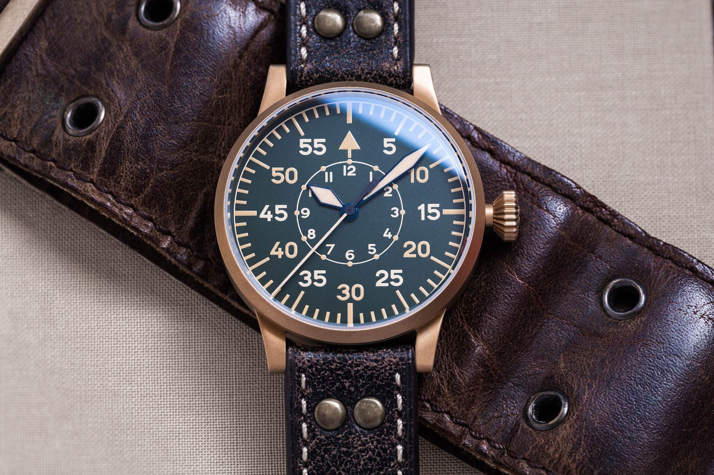
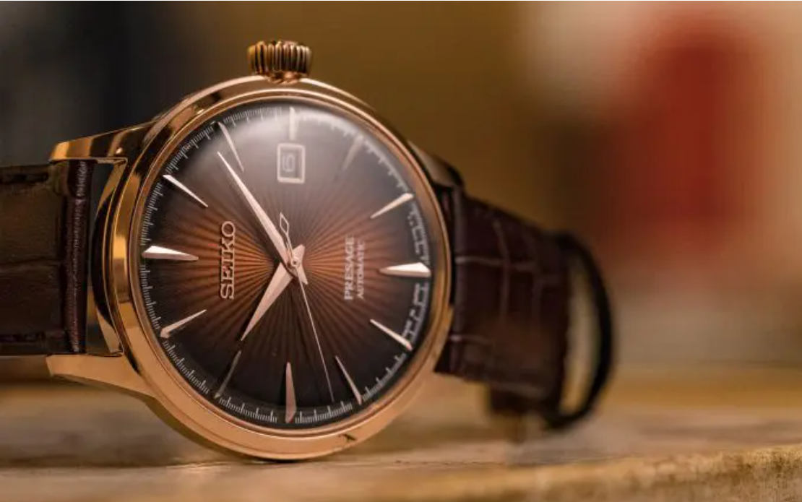
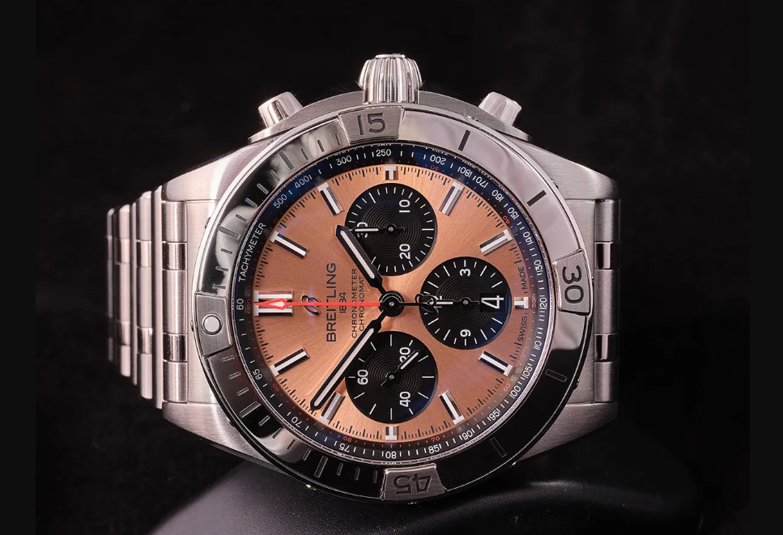

To a newcomer, deciphering the world of timepieces can be an intimidating endeavor,
and identifying the different types of watches presents a particular challenge.
What distinguishes, say, a dive watch from a pilot watch,
a quartz watch from a mechanical watch, a dual-time watch from a world timer?
What are all those subdials and scales on the dial for? Do I need to change the date on my watch,
and if so, how often?
In this rundown of the various types of watches, we strive to answer the big questions.
Dive Watch
Seiko 007 - ISO Certified Dive Watch
One of the most popular categories of watches, for many years running, is the dive watch,
a type of watch that can trace its lineage roughly back to the early 1950s and some of the pioneers of the genre that emerged during that era, like the Blancpain Fifty Fathoms,
Rolex Submariner, and Zodiac Sea Wolf. The quest to make a watch that would be waterproof enough for sailing,
swimming and, eventually, scuba diving goes back much further than that, of course: Rolex introduced its trendsetting, waterproof Oyster case in 1926,
Panerai made its first Luminor for Italian navy frogmen in 1936, and Omega launched the Seamaster, its waterproof, dressy "officer's watch", in 1948.
However, the vast majority of today's dive watches adhere to the template established in the mid-20th Century, an era that saw the rise of diving as both a recreational hobby and a professional pursuit.
The ubiquitous elements include a lockable bezel with a numbered scale that rotates in only one direction,
which allows a diver to safely keep track of his time underwater;
a robust, water-resistant case with a screw-down crown; a legible dial with large numerals and/or markers,
treated with luminous material for an easy reading of the time in the dark depths;
and a durable strap that can both withstand prolonged immersion in water and keep the watch securely fastened to a diver's wrist in the event of unexpected pressures or obstacles. Some dive watches, like the Omega Seamaster Diver and Rolex Sea-Dweller,
are also equipped with a built-in helium release valve, which regulates built-up pressure inside the watch during the decompression phase of saturation dives,
in which divers spend long periods inside a diving bell under high levels of pressure.
Pilot's Watch

Laco - German Fliger Watch
With the advancement of aviation in the early 20th century came a corresponding need for watches that could be used reliably in an aircraft cockpit,
whether simply to track time or to make complex calculations in those early days before flight computers, radar, or GPS.
(The first men's wristwatch, technically, was a pilot's watch, made by Louis Cartier for his friend Alberto Santos-Dumont, a pioneering balloonist.)
As the science of flight turned more toward warfare in the 1930s and '40s, the style of pilot's watch that we still refer to as flieger
(from the German word for flyeror pilot) became dominant.
Perhaps most famously represented by IWC's Big Pilot's Watch, the essential features of flieger watches include a large matte-finished case, a black dial with large, luminous numerals and a triangle with two dots at 12 o'clock for orientation in flight, a big,
diamond-shaped crown for easy gripping by a pilot's gloved hands and a heavy, sturdy leather strap that could be worn over a flight jacket.
In addition to IWC, several German watch manufacturers are known for their flieger-style pilot's watches, including Laco, Stowa, and Wempe.
Dress Watch

Seiko Cocktail Time - Modern Dress Watch
While their strict stylistic parameters are somewhat difficult to define,
dress watches can basically be thought of as any watch you would want to wear while dressed up, in an office environment or for an elegant outing,
while simultaneously being a watch you definitely would not want to wear for physical work or engaging in any kind of sports or recreation.
While they can be complicated (like many examples from Patek Philippe, A. Lange & Sohne, Vacheron Constantin, and Breguet,
brands whose entire output might be considered "dress"),
dress watches are very often recognized as having clean, simple dials; small and relatively thin cases, frequently in precious metals,
that can slide understatedly beneath a shirt cuff and leather straps rather than metal bracelets or rubber straps.
Chronograph Watch

Breitling Chronomat 41 - Chronograph Watch with In House Movement
Chronograph watches, quite simply, are watches equipped with a stopwatch function that can be used to measure elapsed times.
Most modern chronographs use a center-mounted hand to count the elapsed seconds, subdials or "totalizers," to tally the elapsed minutes and/or hours
and pushers or buttons on the side of the case to start, stop, and reset the chronograph hands.
Originally, chronographs were equipped with a single pusher ("monopusher" or "monopoussoir" in French)
to operate all the stopwatch functions, and some chronograph watches are still designed in this vintage style.
Breitling invented the more common two-button chronograph design in 1923.
Most chronograph dials are either bicompax (with two subdials) or tricompax (with three subdials, like the Zenith Chronomaster Original).
A chronograph with a flyback function enables the user to stop, return to zero, and instantly restart the elapsed-seconds hand to begin timing a new interval distinguishing it from a standard chronograph in which stopping, returning to zero, and restarting each require a separate push.
Because of the complexity of this mechanism, most flyback chronograph watches are on the pricey side.
Related to the flyback, and often referred to by its French name, rattrapante, a split-seconds chronograph is equipped
with not one but two elapsed-seconds hands, one positioned directly above the other while the chronograph is switched off.
Both hands are started and returned to zero simultaneously via a pusher.
A second pusher allows the split-seconds or rattrapante hand, usually the one underneath,
to repeatedly separate from the upper hand to record split times and then be instantly returned into its position under the other, still-moving hand.